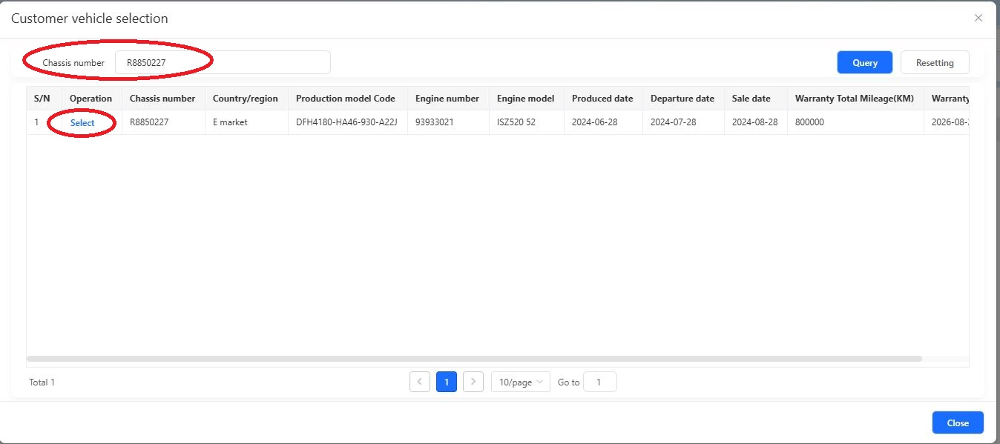
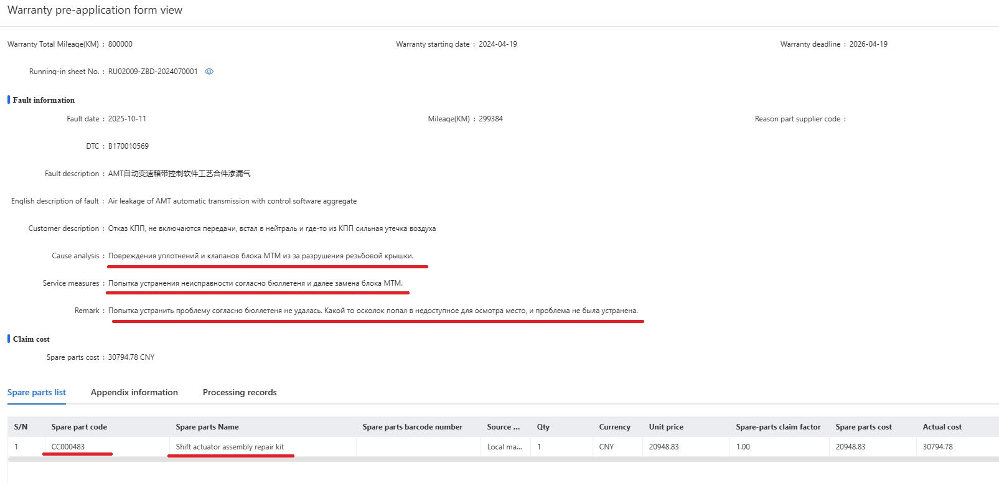

Заходим All Menus – After-Sales Service - Warranty pre-application – Pre-application form registration

Любой ремонт, суммой запасных частей более 5000CNY, должен быть
оформлен через создание заявки на предварительное одобрение, в меню
Warranty pre-application.
DMS не даст сохранить рекламацию в меню
Management of vehicle warranty claim, при добавлении детали или деталей
стоимостью более 5000Юаней, без номера, который присваивается после
одобрения предварительной заявки.
Заходим All Menus – After-Sales Service - Warranty
pre-application – Pre-application form registration
В открывшемся окне, видим уже привычные инструменты отбора созданных,
но находящихся в работе заявок, и ниже сами заявки, когда они будет
созданы. Для создания новой заявки – нажимаем синюю кнопку New
additional 
В открывшемся окне, находим нужное нам шасси, и подтверждаем выбор нажатием на Select.

Далее заполняем форму так же, как и в рекламации, все поля,
отмеченные звездочкой.
Отличие от стандартной рекламации — это выбор
Warranty type, тут их 3.
PDI – для ремонта машины до продажи
After sales warranty – ремонт по обращению клиента
Spare parts claim – при гарантии на запасную часть
Дальше
все стандартно – пробег, дату ремонта, код дефекта, жалоба клиента, код
производителя детали (если его можно на ней найти), и так далее.

Ниже заполняем причину неисправности и способ устранения, вносим необходимые запасные части, и прикладываем фото, все так же, как и в обычной рекламации. Только в предварительной заявке не указываются работы.

После заполнения всех пунктов, сохраняем (Save), и отправляем на рассмотрение (Submit). Чем качественнее вы заполните описание, тем быстрее и легче пройдет согласование.
После одобрения, создаем стандартную рекламацию, в поле Pre-application NO. Выбираем нашу одобренную заявку. Все данные, которые мы заполняли в заявке, автоматически подтянутся в рекламацию. Одобренная заявка на предварительное согласование – 99% одобренная рекламация.